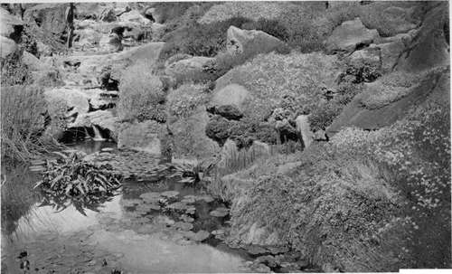
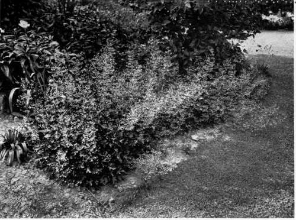
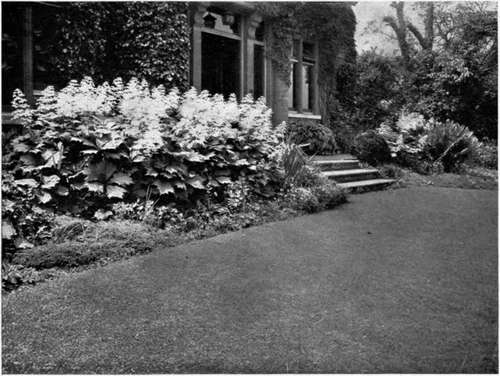
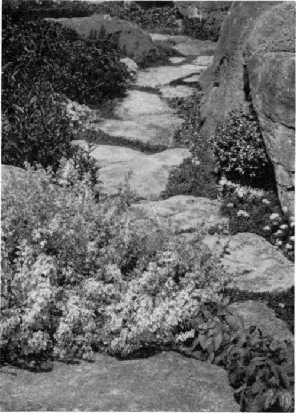
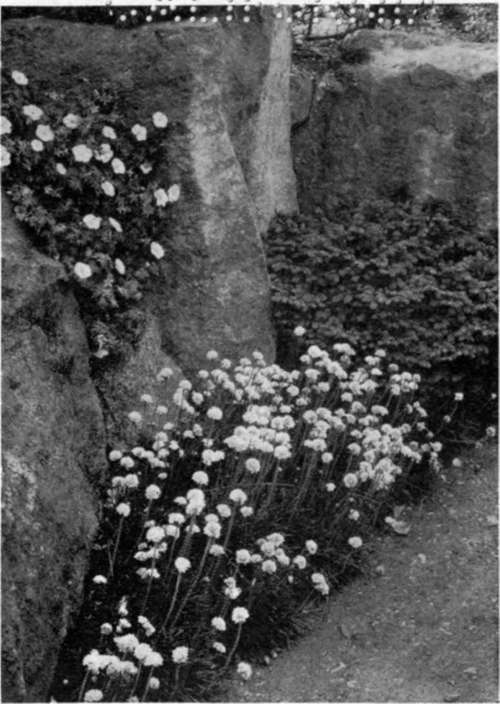
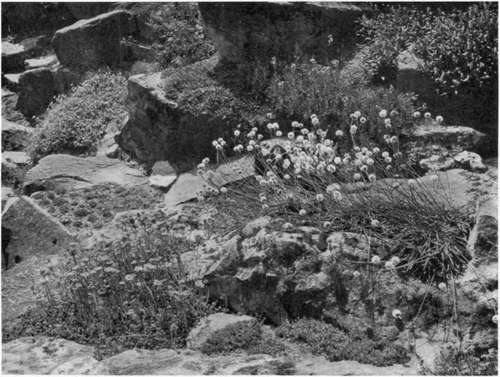

Chapter XX. English Effects With Alpine Flowers
Description
This section is from the book "What England Can Teach Us About Gardening", by Wilhelm Miller. Also available from Amazon: What England Can Teach Us About Gardening.
Chapter XX. English Effects With Alpine Flowers
Rock gardening a universal passion in England and may become so here — Most of the showiest flowers easy to grow even with no rocks.
ROCK gardening is a universal passion in England, and no wonder, for the alpine flowers are the real "gems" of the floral world. They are as small as jewels and have the same purity of colour, and in spite of their diminutive size they are showy, because they have a genius for spreading so as to form great sheets of bloom.
For thirteen years I had been dreaming of English rock gardens and reading articles about them in English papers, yet I was totally unprepared for the immense number of them and the radiant visions of beauty which they present. I had seen nearly all the important rock gardens in America, and knew there were only two notable ones outside of botanical gardens. So I supposed that rock gardening was merely a hobby for a few skilled amateurs and collectors. On the contrary, it seemed as if every one had a rock garden, and the mass effects, while they last, are brilliant beyond anything we know or can imagine.
At first I touched the stars, as every one does who sees a collection of alpines for the first time. The ground is carpeted with jewels, such as Ali Baba never saw. Speech seems a poor thing. You are far above mere names of plants and botany. You wander about, half seeing new forms and drinking great draughts of ambrosial colour until the mind can hold no more, and you put your hands over your eyes to shut out the splendour of this new wonder-world.
Soon comes a sorrowful reaction. Every one says: "You Americans can never reproduce these effects on a large scale. Your summers are too hot and dry. It is the cool, moist summer of England that suits these mountain flowers to perfection".
I felt, as thousands of Americans before me have felt, that rock gardening was an impossible proposition for us, and I tried to renounce all this beauty, for I was on a practical mission. But each new rock garden caused a fresh pang and fresh dejection until I was ready to quit England in despair.
One day at Kew I noticed how many of the most beautiful flowers in that famous rocky dell were native to America and the thought came, "If England can grow and love our mountain flowers, why cannot we?" Then I began to ask every gardener, "Which flowers can stand the hottest sunshine on the barest rocks?" and found a goodly number of them. These two classes of plants alone seemed to me enough to justify an American style of rock gardening.
But the biggest fact of all never came to me until I got back home and had a chance to study our own books and catalogues. Most of the showiest rock-loving flowers are so easy to cultivate that any one can grow them in an ordinary border without any rocks at all! And practically all the difficult kinds which English enthusiasts grow any American can enjoy if he will go to the expense of a really first-class rockery.
So I say boldly the old pessimistic attitude is dead wrong! Rock gardening will become a great institution here. Our hot, dry summer will not prevent rock gardening, but will give it a beautiful new American character. I am confident of it for two reasons. We have the spirit and we have the plants. We all want the best there is, and certainly there are no flowers more beautiful than alpines.
A BIT OF SIR FRANK CRISP S FAMOUS ALPINE GARDEN AT HENLEY, MODELLED AFTER THE MATTERHORN. IT COVERS ABOUT THREE •••• ACRES, 7,000 TONS OF ROCKS WERE USED, AND ABOUT 1,000 SPECIES ARE GROWN. IT IS SAID TO BE THE LARGEST PRIVATE ROCK GARDEN IN THE WORLD. See page 65.
EXAMPLE OF THE MANY MISTY, AIRY, LACE-LIKE EFFECTS WHICH THE ENGLISH GET BY USING VARIOUS SPIREAS, MEADOW RUES, ETC. See page 234. THESE ARE HEUCHERAS, NATIVES OF AMERICA.
EXAMPLE OF PERENNIALS FOR ARCHITECTURAL EFFECT, THE SPIKES OF THIS RODGERSIA REPEATING THE VERTICAL LINES OF THE HOUSE. MR. FREMLIN's, WATERING BURY, KENT. See page 231.
THE LARGE-FLOWERED CATNIP (Nepeta Mussini) HAS PURPLE FLOWERS IN RACEMES SIX OR EIGHT INCHES LONG. IT BLOOMS STEADILY FOR three months.
THE EDGING IS OF WHITE THRIFT (aRMERIA). ABOVE IS A HARDY GERANIUM. THE EVERGREEN PLANT IS A DWARF SPRUCE.
THE PLANTAIN-LEAVED THRIFT (Armeria planlaginea) HAS BALLS OF PINK FLOWERS AND LONG, PICTURESQUE STEMS. THE SEDUM IS A NEW SPECIES FROM JAPAN, WITH LARGE YELLOW FLOWERS, RED STEMS AND GRAY LEAVES BORNE IN ROSETTES. ALL THE PICTURES ON THIS PAGE ARE FROM SIR FRANK CRISP'S GARDEN. See page 65.
England herself used to be equally pessimistic about her own ability to grow alpines, and her wonderful enthusiasm of to-day has come within the memory of the present generation. English authorities used to say that alpine flowers cannot be grown in the lowlands. Certainly the climate of England is quite unlike that of the Alps. In Switzerland the flowers are protected from alternate freezing and thawing by the snow; in England they are not. Yet there are few alpine flowers worth having that are not now grown in England.
We, too, are handicapped by changeable winters and hot summers, but we can find plenty of charming alpines that will stand both. For instance, here are some flowers that grow wild on the Alps but are so common in gardens that we never think of them as alpine plants — the snowdrop, daffodil, poet's narcissus, trailing myrtle, Christmas rose, lily-of-the-valley, Scotch pinks, common columbine, and English daisy. You may think that these are too gardenesque for alpine effects, and I heartily agree that improved pinks, columbines, and daisies would not be appropriate. It would be impure design to use big masses of them on rocks. But the wild forms of these plants are as dainty as any other alpine flowers, and it is easy to get the seed of any wild forms from Geneva, Switzerland.
This reminds me that the cheapest and easiest way to start a collection of alpine flowers is to import the seed from Europe, because flower seeds can now be mailed with slight duty. There are no American catalogues of alpine plants, but there are many in England. There is a Swiss catalogue that offers two thousand five hundred different kinds of seeds; and a German that lists about three thousand four hundred. This illustrates the immense range there is for individual taste and experiment.
However, beginners are appalled by such big lists, and most Americans want to know where they can buy plants, because they are generally in a hurry and do not mind the extra expense if they can get results the first year. Unfortunately, there is no way of buying alpine seeds or plants in America, at the present time, except by picking out the alpine species from general catalogues. As beginners do not know which plants are alpines, I shall be forced, at the risk of seeming unduly technical, to give lists of alpine plants and indicate how they can be secured. But you would find it much pleasanter to buy a good book, like Hulme's "Familiar Swiss Flowers," decide from the coloured plates what you want, and then send your list to one of the specialists in hardy perennials for an estimate, because they often have many species which they do not catalogue.
Continue to:
Tags
garden, flowers, plants, England, effects, foliage, gardening